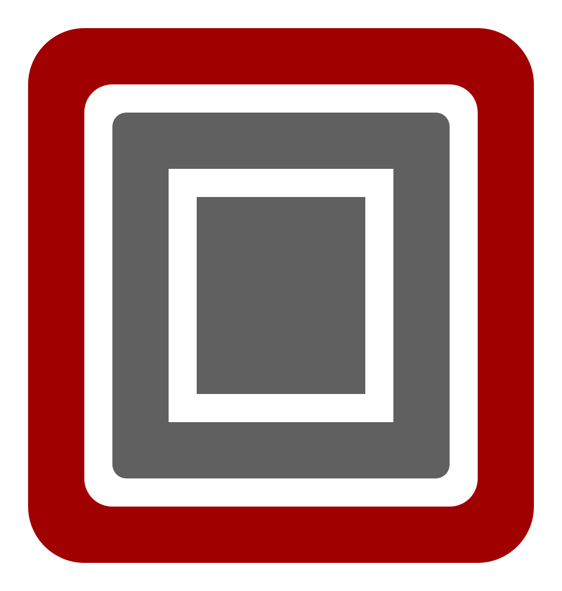
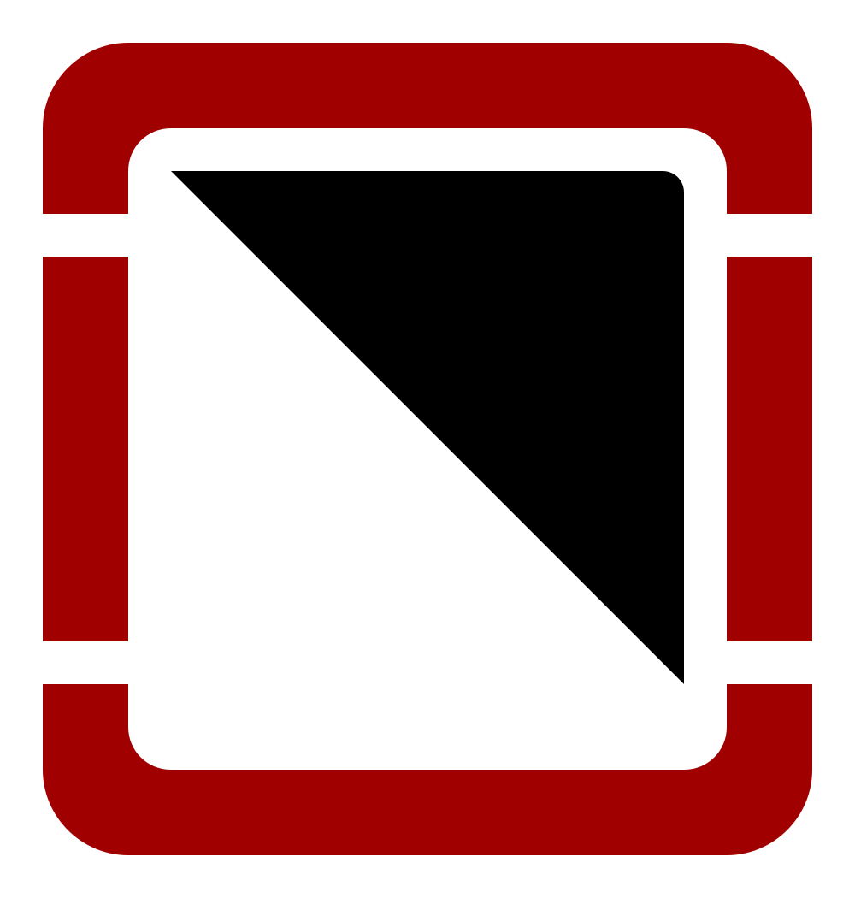
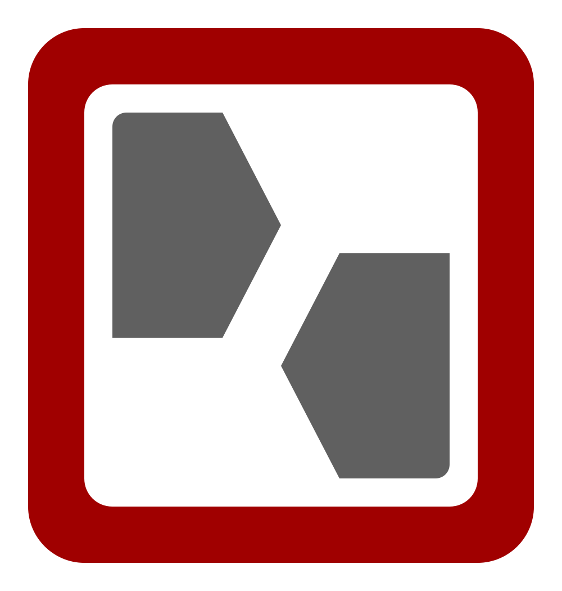
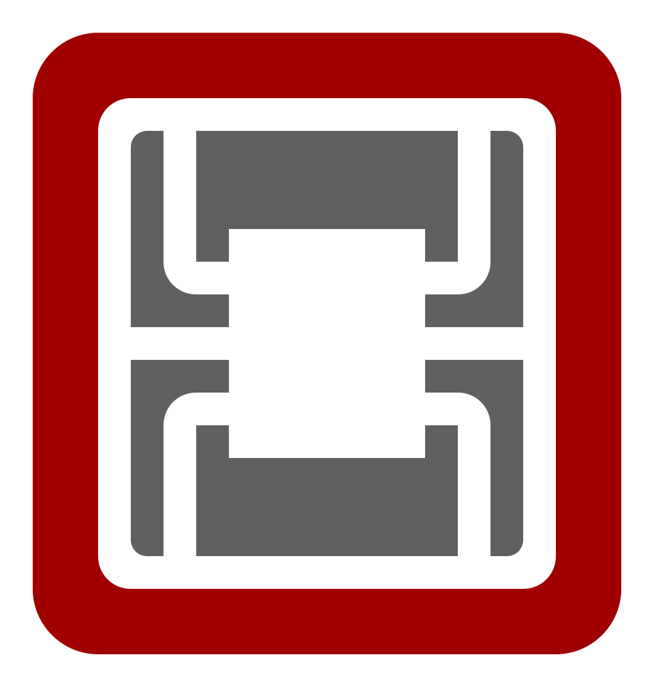
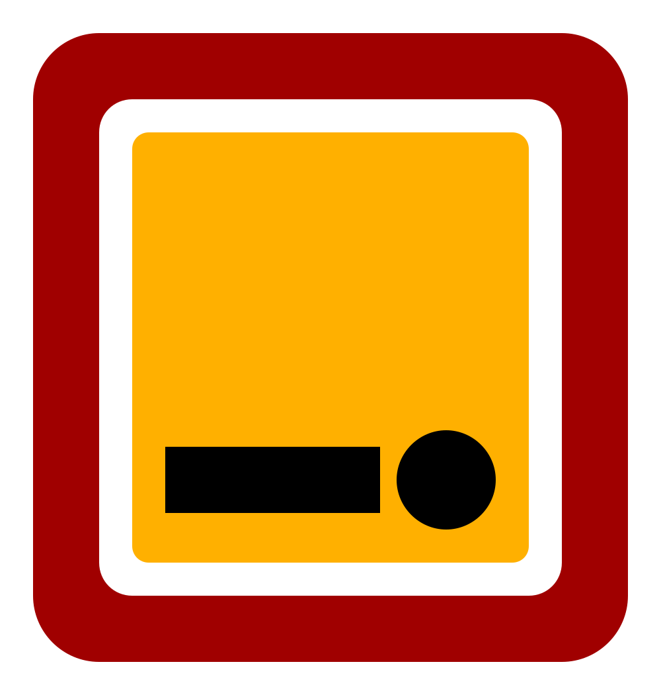
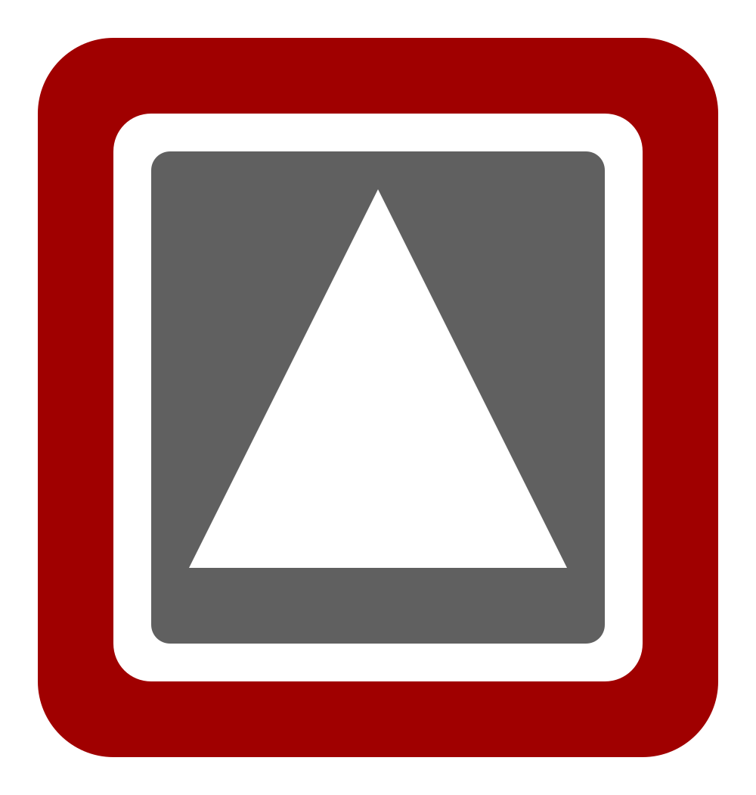
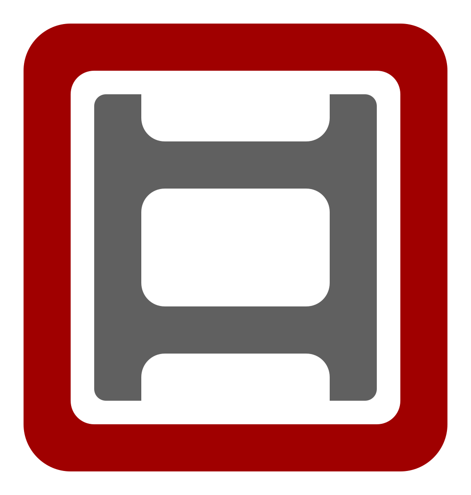

Agentic keypad with Semiotic Standard keycaps
Design an Ortholinear, one-handed agentic keypad using only G20 Semiotic Standard legends — Linux action inventory for Cursor, Claude Code, and Codex over KVM.
Why a pad
One machine does the typing; another runs an agent you can see on a shared monitor. A KVM lets you glance at that second screen, but you often do not want a full keyboard plugged into it. A small programmable macro pad is enough if it can send the few chords and sequences you actually use to steer, approve, stop, and exit.
This post is that agentic keypad: personal high-frequency controls across Cursor, Claude Code, and Codex on Linux, mapped onto an Ortholinear pad with uni-profile Semiotic Standard legends. The pad is one-handed and never asks you to hold a modifier chord — macros may emit chords, but every physical key is a single press.
Decisions
- Ortholinear (all 1u). No pad-side key combinations means no need for 1.25u / 1.5u Shift or Ctrl blanks; stock pads with odd key widths make legend matching painful.
- Uni-profile keycaps. Row-sculpted profiles (e.g. Cherry) lock which legend can sit in which row. Uni-profile sets — G20, XDA, DSA — keep every key the same shape so layout stays free.
- Semiotic Standard only. One legend vocabulary (G20 Semiotic); every other keycap set is out of scope.
- Mode cycle = one key. Using an encoder to spam Shift+Tab both ways wastes an axis and misreads as continuous control. A dedicated pad key emits Shift+Tab instead; the encoder is free for zoom.
Semiotic Standard keycaps
1u symbol sheet from G20 Semiotic (kits with wider caps omitted — Ortholinear pad uses 1u only). Click for the product page.
Conventions
- Bindings are Linux defaults from current product docs (Cursor Cmd → Ctrl).
- Chords use
+inside one key span: Ctrl+L. - Sequences of separate presses use
→: / →plan→ Enter. - Alternates in the Tools columns are separated by
;. - An empty cell means the action is not applicable or has no documented binding / keycap fit.
- Several rows are cycles (mode, approval), not single toggles — a pad key may need to send the chord more than once.
- Knob/Wheel marks analog pad controls: rotary encoder / scroll wheel () for scroll and zoom, or joystick () for selection.
- Semiotic is the only keycap legend set: G20 Semiotic (Zslane / Signature Plastics). Icons are Cobb Semiotic Standard vectors (louh/semiotic-standard, CC BY 4.0), linked to that product page.
- A green row with
 means that binding choice is decided (ADR-style).
means that binding choice is decided (ADR-style).
Actions
Tool columns link to each product’s shortcut docs. Identical bindings across tools share a cell.
| Action | Tools | Controls | Notes | |||
|---|---|---|---|---|---|---|
| Cursor | Claude Code | Codex | Knob/Wheel | Semiotic | ||
| Scroll Content |
Mouse-wheel scrolling works in each agent. Map to a rotary encoder — too sensitive for a discrete keycap, so no Semiotic legend. | |||||
| Zoom in |
Ctrl+Shift++ | Terminal / agent-host zoom on one rotary: one direction emits Ctrl+Shift++, the other Ctrl+Shift+-. Hosts may also honor plain Ctrl++ / Ctrl+-; the pad sends the Shift variants. No Semiotic — knob only. | ||||
| Zoom out |
Ctrl+Shift+- | |||||
| Plan Mode |
Shift+Tab | One dedicated pad key for both rows: each press emits Shift+Tab, which cycles modes in every tool. Keep two action rows for clarity (Plan vs Agent; on Claude Code the agent-side stop is Auto). Encoder left for zoom — not mode cycling. | ||||
| Agent Mode |
Shift+Tab | |||||
| Selection up |
Up | Up; Ctrl+P | Up | Joystick on the pad: up/down emit Up / Down (lists, pickers, plan choices, draft history). No Semiotic — stick only. | ||
| Selection down |
Down | Down; Ctrl+N | Down | |||
| Choose option 1 |
1 | Numbered alternatives map 1:1 to pad keys 1 / 2 / 3. Prefer joystick Up / Down + Confirm when the menu is not numbered. | ||||
| Choose option 2 |
2 | |||||
| Choose option 3 |
3 | |||||
| Open slash / command menu | / | Type at the start of the input (or empty composer) to open the command list, then navigate with Up / Down. | ||||
| Open Codex apps / $ insert | $ | Codex inserts app mentions as $app-slug (see /apps). Not a second slash menu — keep / for slash commands. |
||||
| Mention file | @ |  |
Fuzzy file path mention / attach. | |||
| Stop agent | Ctrl+Shift+Backspace | Esc | Cursor: cancel generation. Claude Code / Codex: interrupt the current turn. On Claude Code permission dialogs, Esc closes the dialog rather than interrupting. | |||
| Exit agent session | Ctrl+W; Ctrl+Shift+P → View: Close Editor |
Ctrl+C → Ctrl+C; Ctrl+D → Ctrl+D | Ctrl+C → Ctrl+C; / → exit → Enter |
 |
One pad “exit” key should expand to the tool-specific sequence. Claude Code / Codex require a double press within a short window. | |
| Mic on/off | Ctrl+Shift+Space; Ctrl+M | Space (hold or tap) |  |
Cursor: toggle Voice Mode; Ctrl+M is hold-to-talk in the Agents Window. Claude Code: voice dictation when enabled (/voice). |
||
| Confirm | Enter | Submit, accept selection, or confirm a dialog. Cursor may also use Ctrl+Enter to force-send while typing. No Cobb SVG for EDS-style Enter on the G20 set. | ||||
| Approve tool | Enter (on prompt); Allow in UI | Y; Enter | Y; Enter; / → approve → Enter |
 |
Unblocks a waiting permission prompt. Codex /approve retries a recent auto-review denial. |
|
| Reject tool | Esc (on prompt); Deny in UI | N; Esc |  |
|||
| Accept diff / keep edits | Ctrl+Enter | Y; Enter (on edit prompt); Shift+Tab → acceptEdits |
Accept on prompt; / → diff → Enter to review |
Cursor: accept all suggested changes when the review UI is active. Claude Code: confirm the edit prompt, or cycle into acceptEdits with Shift+Tab. |
||
| Reject diff / discard edits | Ctrl+Backspace | N; Esc (on edit prompt) | Decline on prompt | Cursor: reject all suggested changes. Does not always roll back files already written — use git / an explicit revert prompt when needed. | ||
| Complete picker | Tab | Accept autocomplete / slash / path suggestion. Codex: while a turn is running, Tab queues a follow-up instead of interrupting. | ||||
| Focus agent panel | Ctrl+L; Ctrl+I |  |
Cursor: toggle / focus the AI sidepanel (both chords are documented). Claude Code and Codex already own the terminal — no separate panel focus. | |||
| Focus workspace | Win+Num + |  |
i3 binding used to jump to the workspace where background agents run — window-manager level, not app-specific. | |||
| Lock | Win+L | Locks the machine running the agents (Super/Win + L) — OS-level, not app-specific. | ||||
Bindings move between releases. For Codex, /keymap in a live session is authoritative for that build.
Next
Pick an Ortholinear all-1u pad with at least one encoder and a joystick, then lay out the decided rows under G20 Semiotic legends. Cursor-only keys (mic, panel focus) can sit on a second layer or be labeled distinctly within the same set.